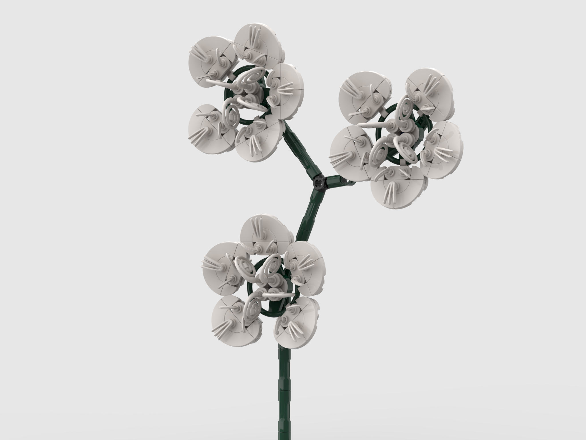
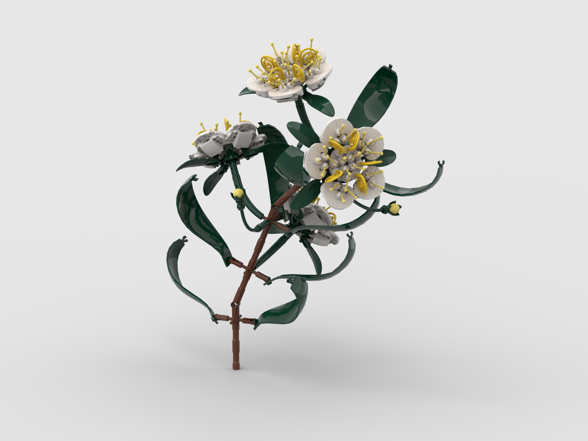
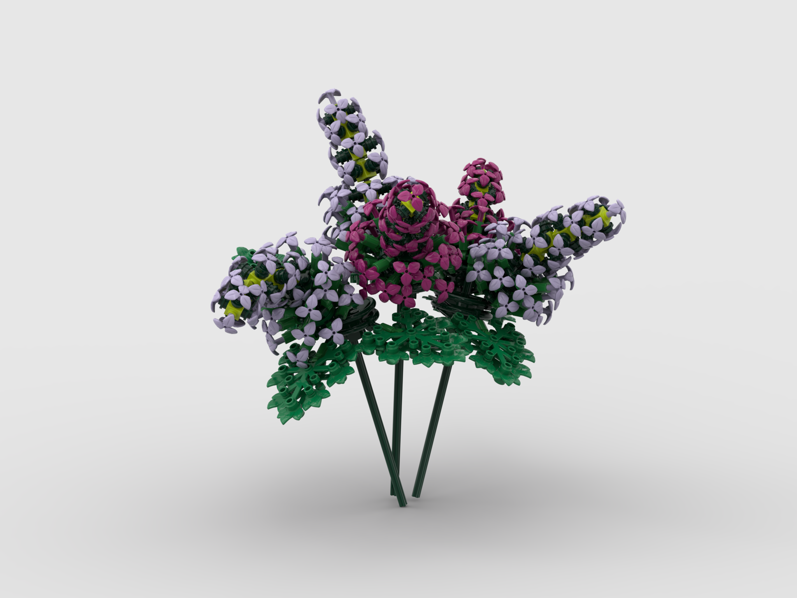
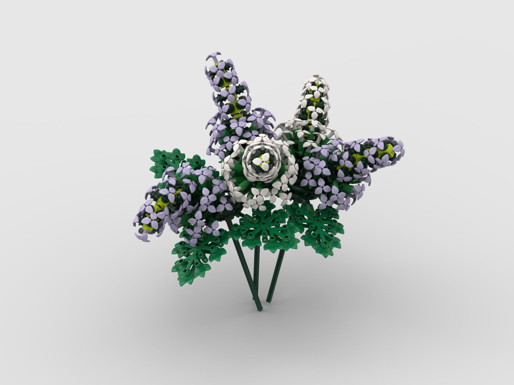
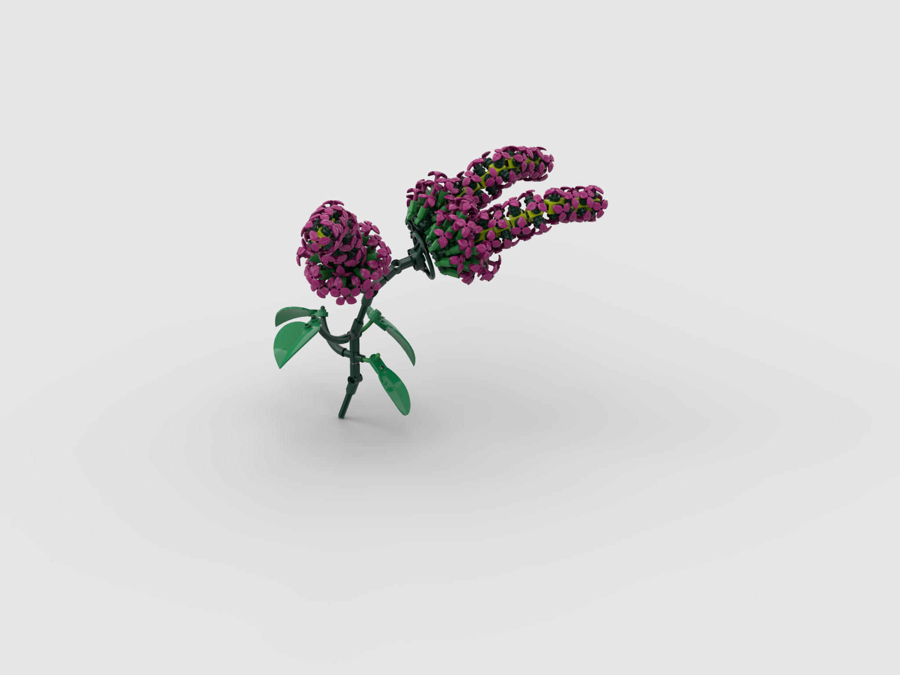

Digital designs
Digital designing is not quite the same as holding the real bricks in my own hands, but it is a very enjoyable way to experiment, nonetheless. Although I do not spend as many hours with my computer as I used to, I still come back to the digital tools every now and then when it seems like I need more complex planning for a large project. I have used a few CAD software in my life for different 3D modelling tasks, but for LEGO bricks Studio is clearly my favourite. The greatest advantage is to have access to rare or non-existent colors for certain bricks and easily apply them, giving an incredible tool for comparing different gradients and pallets. What makes it even more fun, is that old versions of the file, previous renders and unused elements on the plate will stay even after they are no longer used, and for me personally, looking back to how the builds have progressed and changed over time is always a pleasure. Seeing the changes in color, detail and the various pieces I attempted to use tells a story of how the final design was born.



Some of my favourites I have done have been inspired by flowers I have seen in the wild and did not have the bricks to fulfil my creative craving to bring them to life in LEGO form. The white petaled myrtle is recognised by its "hair" which seemed like a fun challenge to replicate. It was a bit tricky, but antenna pieces and whips recolored to yellow did a fine job with this. The petals were also not as easy as it would be today, as this is one of my older builds, one I made long before curvy petal elements were as abundant as they are now, so at the time I went with a classic brick built approach.



The lilacs were at first a nightmare to work with, as the flexible tubes are sensitive to adjust digitally, but after I got comfortable with shaping them, I was able to make nice and organic shapes. Thanks to these tubes, I could introduce variety by posing the individual flowers differently, even if they looked identical to each other. Here, again, the option to simply change colors was proven to be an incredible tool.